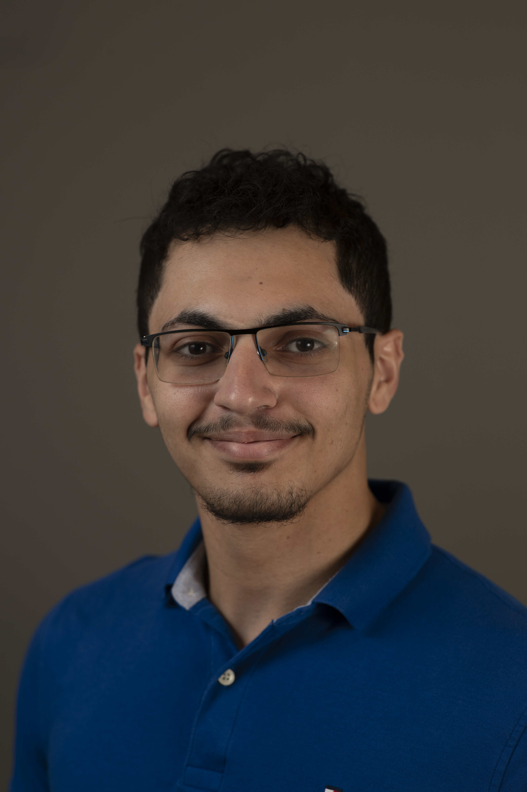

As you may have already seen my name is Adam Elshanawany. I am a Computer Science Undergraduate at middlesex currently and trasnfering out for the upcoming fall semester. Currently learning Web Development as a potential path I would like to take with my degree.
An objective I currently have is seeking a summer internship where I can use my computer science background and interpersonal skills to further company growth and gain experience. I am eager to apply classroom knowledge to real-world projects, gain hands on experience, and collaborate with a dynamic team.
